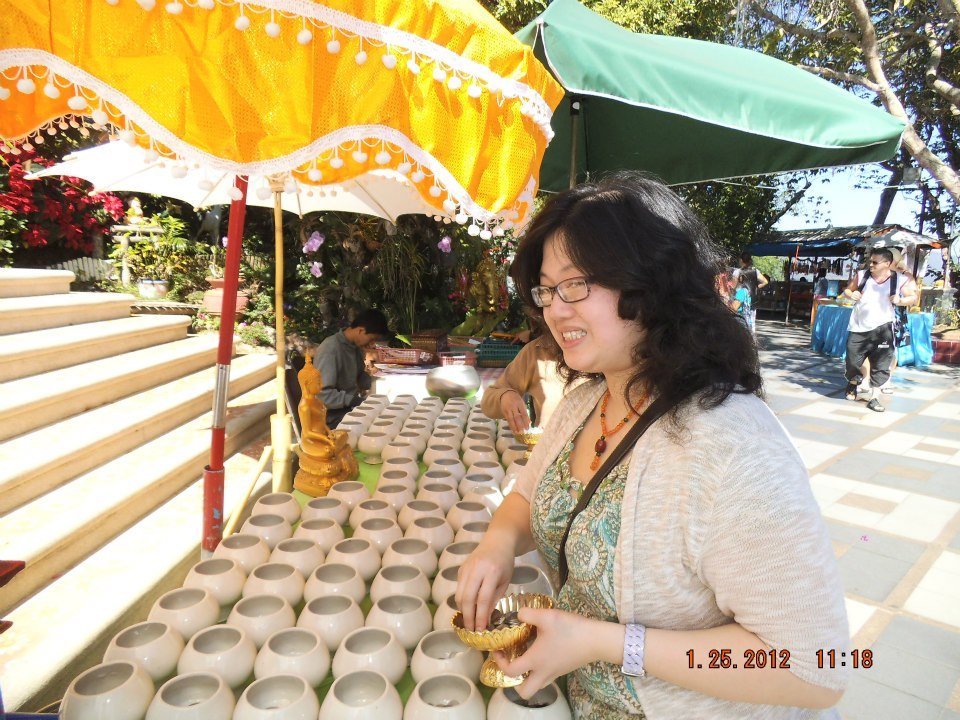

Traveling Hobby
One of my favorite hobbies is traveling. If I was not hindered by lack of funds, then I would travel at least
once per season annually. I want to travel to both domestic and international cities. What I love about
traveling is being able to submerse myself into a different culture and society to learn and observe customs
different than my own. One of my favorite places that I had visited is Chiang Mai, Thailand.
The Land of Smiles
I had visited Chiang Mai, Thailand because that is my parents' birth country. I had a fun time visiting my
relatives and visiting all of the Buddhist temples. My favorite thing to do was heading to the open market to
buy food before a meal like breakfast. My favorite temple is Doi Suthep which translates to God Mountain in
English. The Buddhist Temple sits on top of a mountain that overlooks a breathtaking view as seen below.

The Land of the Rising Sun
The next city/country that I would like to visit is Tokyo, Japan. I have been fascinated with Japan since I was
two-years-old from their pop culture to their food to their advanced technology. I am waiting on the edge of my
seat for the right time to come along to finally visit. Although I have only mentioned one city, there are other
cities that I would like to visit either on the same or separate trip. For my first time there, I think a tour
guide would be sufficient to get around since Japan has some of the most populous cities and English is not spoken
prevalently. I hope that I will be able to visit this amazing country soon. If not, there are other cities and
countries that I would like to visit, too.

Tope 3 Other Cities to Visit:
- Kyoto
- Osaka
- Kobe
Other Cities or Countries to Visit
- United Kingdom
- Spain
- Italy